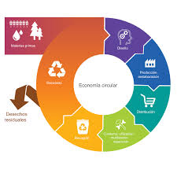
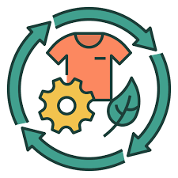
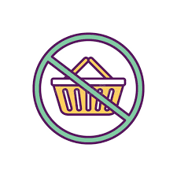
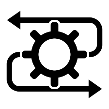
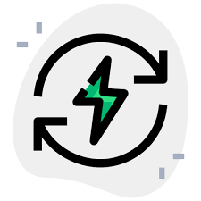

4.1 La economía circular
La economía circular es una forma de producir y consumir que busca aprovechar al máximo los recursos. En vez de usar algo y tirarlo, lo que se intenta es compartir, alquilar, reutilizar, reparar, renovar y reciclar todo lo posible. Así, los productos duran más tiempo y se generan menos residuos.
4.1.2 Características de las 3R a las 7R
Rediseñar: Pensar productos desde su origen para ser sostenibles
Reducir: Evitar el consumo innecesario.
Reutilizar: Usar nuevamente sin transformar
Reparar: Arreglar antes de desechar
Renovar: Actualizar partes del producto para alargar su vida
Reciclar: Recuperar materiales de desecho.

Recuperar: Obtener energía o recursos de residuos que no se pueden reciclar.
4.2 Modelos de producción y economía lineal
| Economia Lineal | Uso único de materiales | Desechos acumulativos | Altas emisiones contaminantes |
|---|---|---|---|
| Economia Circular | Reutilización y reciclaje | Cierre de ciclos de materiales | Reducción de impacto ambiental |
4.3 El consumismo
Causas:
- Publicidad masiva.
- Obsolencia programada.
- Pesión social y cultural.
- Créditos y facilidades de pago.
Beneficios:
- Dinamiza la economía.
- Estimula la producción y el empleo.
Desvenajas:
- Generación excesiva de residuos.
- Agotamiento de recursos naturales.
- Aumento de emisiones contaminantes.
Problemas sociales:
- Desigualdad en el acceso al consumo.
- Ansiedad, estrés y frustración.
- Deuda por consumo excesivo.
4.3.1 Obsolescencia programada
Es cuando las empresas hacen productos que duran poco a propósito para que la gente tenga que comprarlos otra vez. Esto hace que consumamos más y compremos cosas nuevas aunque las viejas todavía podrían servir si estuvieran mejor hechas.
4.4 Economía verde
Comparación con economía lineal en tabla. Sugerencia: usar una infografía.
| Economia Lineal | Modelo tradicional | Uso ilimitado de recursos | Genera grandes residuos | Alta huella de carbono | No considera impacto ambiental |
|---|---|---|---|---|---|
| Economia Verde | Modelo sostenible | Uso racional | Minimiza residuos | Baja huella de carbono | Considera impacto en cada etapa |
4.5 Ciclo de vida de un producto
Fases:
- Extracción de materias primas: Obtención de recursos naturales
- Producción: Fabricación y ensamblaje de productos
- Distribución: Transporte y entrega del producto
- Uso: Consumo y utilización del producto por el usuario.
- Fin de vida: Reutilización, reciclaje o disposición final.